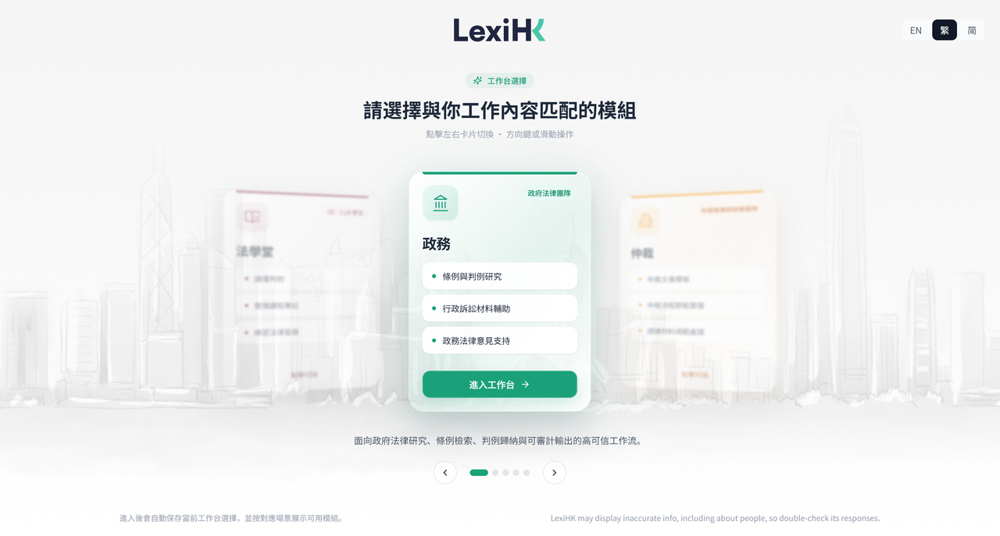
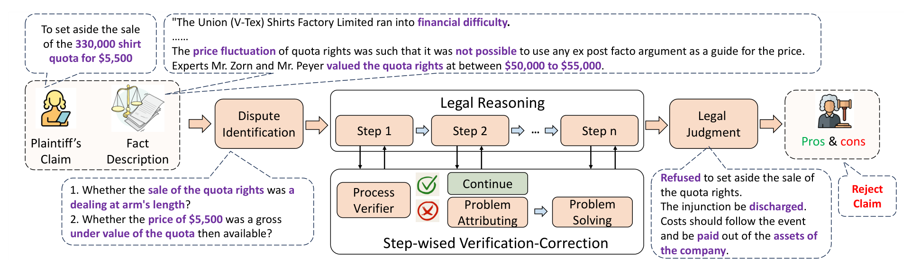
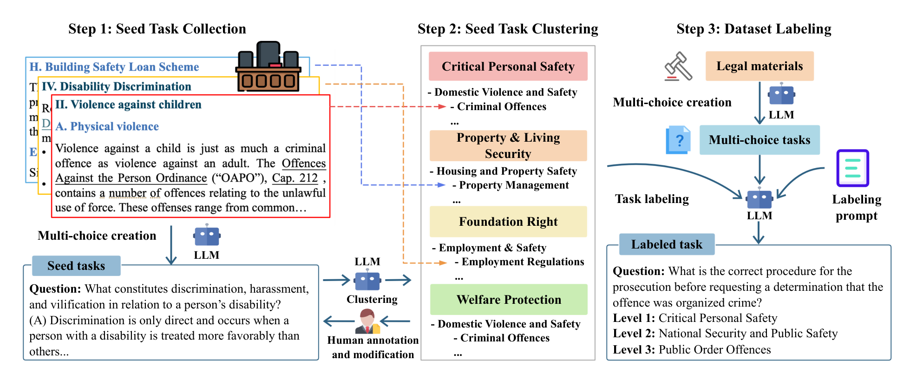
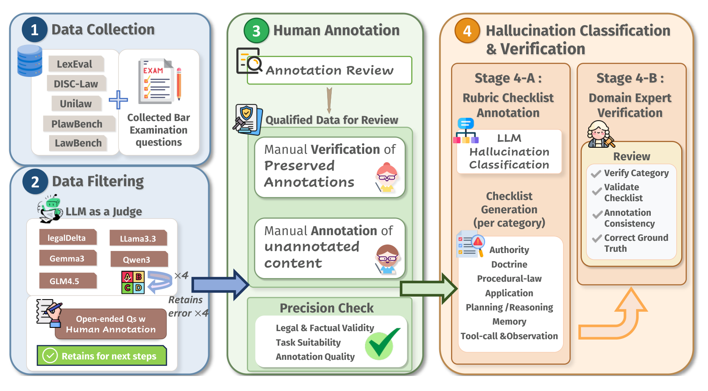

Trustworthy AI Governance and Compliance
How can legal obligations become auditable requirements and tests?
Regulatory tracking, data governance and AI assurance.

The Center works across three connected areas: trustworthy governance, professional services and human–AI interaction. Research examines not only whether AI can complete complex tasks, but also whether its evidence is reliable, its processes can be reviewed, and people can participate in judgment and responsibility.
How can legal obligations become auditable requirements and tests?
Regulatory tracking, data governance and AI assurance.
How can legal practice advance AI reasoning and verification?
Legal AI evaluation, LexiHK research and accountable professional workflows.
How do people judge, rely on and challenge AI?
Studies of professional work, accountability and interdisciplinary education.
Planned
Track AI regulation and policy developments and conduct comparative research across jurisdictions.
Planned
Study cross-border data governance, privacy protection and trusted data use.
Planned
Explore systematic testing, oversight mechanisms and incident-response methods.
Planned
Evaluate bilingual legal reasoning, source verification and human–AI workflows.
Planned
Study AI’s effects on professional roles, reliance and accountability.

LexiHK is a home-grown legal AI platform built for Hong Kong’s bilingual common-law setting and developed with the Hong Kong Generative AI Research and Development Centre (HKGAI). It provides legal chat, retrieval, case research, document drafting and contract review, and serves as a testbed for source verification, reliable reasoning and human–AI collaboration. Its product and research operations are presented separately from the Center.
View project
LegalReasoner investigates how intermediate reasoning steps can be checked and corrected in legal judgment tasks. The project connects language-model reasoning with structured verification to support more reliable legal analysis.
Read paper
SafeLawBench studies the evaluation of language-model safety alignment with reference to legal standards. It provides a research resource for examining whether model responses meet domain-specific expectations of safe behaviour.
Read paper
LexAgentHallu evaluates hallucinations across the multi-step trajectories of legal agents. Its hierarchical taxonomy distinguishes legal-content errors from failures in tool use and agent procedures, helping researchers locate problems that final-answer scores can overlook.
Read paper